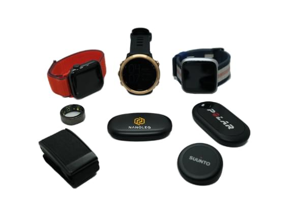

The importance of vital sign monitoring. 
Vital signs are the most important indicators of our health and vital sign monitoring plays a major role in unlocking a healthier, more balanced life.
ARTERIES
Arteries are vessels that transport oxygenated blood from the heart to your body, except for the pulmonary artery, which carries deoxygenated blood to the lungs. The blood pressure in your arteries increases when the heart contracts and decreases when it relaxes. Arteries contain smooth muscles in their walls which help to distribute the blood. Arterial stiffness, an important medical parameter, can be assessed by measuring the wave velocity of the blood pulse (PWV). Arterial stiffness can increase with age, too much tension over time and many other factors and has an essential impact on the health of your cardiovascular system. Arterial stiffness or softness can indirectly be seen in classical blood pressure measurements or by measuring the time a pulse wave needs from the heart to your arms or legs (PWV, pulse wave velocity). Mental relaxation and physical activity can help to keep your arteries soft.
HEART
Your heart beats around 100.000 times a day, pumping oxygenated blood, hormones and other vital substances to other body parts. It functions via the cardiac conduction system, which controls the rate and rhythm of the heartbeat using electrical signals. These signals (ECG) and the rate of beating (HR) can be measured by Electrodes integrated into textiles. In essence, ECGs are a graph of voltage versus time of the heart's electrical activity. How fast your heart beats during exercise and rest is a well- established indicator of how trained your body is. The slower the heart needs to beat during physical activity, and the faster it recovers to a normal rate, the fitter it is.
HYPOTHALAMUS
The hypothalamus is responsible for maintaining homeostasis, which means keeping your body in a stable, balanced condition. It regulates hormones for social bonding, stress, and blood pressure. It also controls hunger, thirst, sweating, and body temperature, preventing overheating or undercooling in extreme environments. Measuring body temperature via textiles can be an effective way to understand your body's state both during rest and exercise.
The hypothalamus keeps your body temperature at 37°C with fluctuations of only half a degree by using a complex set of thermoregulators: sweat glands to cool the skin surface, blood vessel constriction to keep warm blood away from the colder skin for , trapping heat, or vessel dilatation to pump the blood closer to your skin for, releasing heat. If your body detects a threat, the hypothalamus rapidly increases the temperature to support the immune system's effectiveness. Problems mainly occur due to a combination of extreme environments, exercise and energy expenditure. For instance, when you are in a hot place for a long time or when you are doing an intense exercise under a lot of heat and humidity, the sweat and evaporation process can fail, and instead of cooling you down, it depletes the body of fluids and salts. If your body detects a threat, the hypothalamus rapidly increases the temperature to support the immune system's effectiveness.
LUNGS
The lungs are the primary organ of your respiratory system and enable the movement of oxygen into and carbon dioxide out of each body cell via the bloodstream. Maintaining a good gas exchange is vital for the proper functioning of the body. This is achieved by approximately 2,400 kilometres (1,500 mi) of airways and 300 to 500 million alveoli in the right and left lung together. Alveoli are the workhorses of your respiratory system. As your blood travels through the capillaries in the alveoli walls, it takes the oxygen from the alveoli and gives off carbon dioxide. Your lung capacity and efficiency are important parameters that influence your physical performance. The breathing rate (BR) is a signal that correlates highly to your state of relaxation or training intensity. Breathing rate typically reacts faster to intensity changes than the heart rate.
RESPIRATORY MUSCLES
In addition to the lungs, your respiratory system includes the trachea (windpipe), muscles of the chest wall and diaphragm, blood vessels, and tissues that make breathing and gas exchange possible. The diaphragm, the coastal and the abdominal muscles work together to expand or contract the lungs and create your breathing pattern. The breathing rate (how fast or slow you breathe) is partially controlled by subconscious processes in the brain, which continuously detect your body's need for oxygen and its need to eliminate carbon dioxide. Interestingly, breathing is the only function in the cardiopulmonary system that can also be actively controlled. For instance, you can enter a state of normal respiration (eupnea), deep and rapid respiration (hyperpnea), diaphragmatic (deep breathing requiring contraction of the diaphragm), and costal breathing (shallow breathing requiring contraction of the costal muscles). It is a powerful tool - with conscious breathing, you can influence other vitals such as heart rate, heart rate variability or body temperature. Breathing rate (BR) and volume (BV) can be measured in textiles via stretch sensors or inductance sensors.
AUTONOMOUS NERVOUS SYSTEM
The autonomous nervous system controls body functions like heart rate or digestion via reflex mechanisms through the brainstem and the spinal cord and is split into the parasympathetic and sympathetic system. Together, these systems control the heart rate and determine how fast the heart changes its rate, which can be seen in a metric called Heart Rate Variability (HRV). Measuring HRV through textiles tells a lot about the state of the nervous system. Generally, stress and intense training result in lower HRV, whereas relaxation and recovery result in higher HRV.
Interestingly, the ANS is physically split into two parts, the parasympathetic and the sympathetic system. The sympathetic system is responsible for intense, focused situations, as it activates the body to "fight or flight". The parasympathetic system is responsible for deep relaxation, with some exceptions, like sexual arousal. Sympathetic activity often causes rather slow changes in the heart rate. In contrast, parasympathetic activity allows fast changes,making it possible that the heart changes its beating rate in sync with breathing for optimized oxygenation. That's why, when you’re relaxed and take deep breaths, you can feel your heart beating faster when inhaling and slower when exhaling.